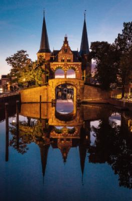

Feitje 1:
Op het wapen van Sneek is een wildeman en een leeuw te zien.Feitje 2:
In 1492 is de waterpoort gebouwd om schepen tegen te houden. Er is niet bekend hoeveel mensen er aan mee hebben gewerkt. De architect is niet bekend. In Sneek stonden 5 waterpoorten en 2 land poorten. Nu is er nog maar 1 waterpoort en de land poorten zijn verdwenen. De klok van de waterpoort loopt 5 min voor want dan hadden de mensen vroeger nog 5 min de tijd voordat de poort sloot. Na verloop van tijd,ongeveer 1850, konden de boten er niet meer onderdoor omdat ze te groot werden.Feitje 3:
De stad is de grootste plaats van de gemeente Súdwest-Fryslân en de derde plaats in de provincie Friesland. De stad telde in 2021 33.590 inwoners.Feitje 4:
>Het treinstation van Sneek is gebouwd in 1884. Het ontwerp is van Rijkswaterstaat, van wie is niet bekend. Het station wordt nog steeds als station gebruikt, maar nu zit er het Nationaal Modelspoor Museum in. In 2004 is het ingrijpend gerestaureerd Van dit type stations zijn er zes gebouwd, waar nog drie van overgebleven zijn. De lantaarn voor het gebouw is ook heel belangrijk Deze heeft 4 armen.Feitje 5:
De watertoren van Sneek is gebouwd in 1908 en is ontworpen door Gerrit Halbertsma. Er was één waterreservoir van 350 m3(350.000 liter).De toren is 44 meter hoog. In 1962 was er een renovatie. Sinds 1998 wordt de toren gebruikt als kantoor. De baas is nu Henk Greydanus.DE WATERPOORT
 De Sneker Waterpoort is een waterpoort over de Hoogendsterpijp in Sneek. De poort bestaat uit twee achtkantige torens, met daartussen een brug over de vaarroute tussen de De Kolk en de Stadsgracht aan het stadscentrum, en boven de brug een poortwachterswoning. Sneek had nog vier andere waterpoorten en twee landpoorten, die alle zijn gesloopt. De Waterpoort bleef over en is tegenwoordig het symbool van Sneek. Dit symbool is onder meer terug te vinden in het grootzeil van het Sneeker skûtsje Sneker Pan, en in de zeilen en kleding van de Sneeker zeilmakerij Gaastra.De waterpoort is waarschijnlijk rond 1492 gebouwd, tegelijkertijd met de stadswal rond de stad. De poort diende om de toegang over water naar de stad af te sluiten. De waterpoort werd gebouwd op de Hoogendsterpijp (een pijp is een smalle waterdoorgang). In 1613 werd de poort verbouwd tot sierpoort omdat deze geen militaire functie meer had. Vanaf dat moment heeft de poort in hoofdlijnen haar huidige uiterlijk. De architect is overigens onbekend. In 1757 volgde een grondige verbouwing.[2] In 1785 kreeg de poort een wachterswoning. Het middengedeelte had nu een sterk 18de-eeuws uiterlijk. Vanaf 1825 werd de stad 's nachts niet meer afgesloten, waardoor de poort definitief haar functie verloor. In de 19e eeuw werden alle andere poorten rond Sneek afgebroken. Ook voor de waterpoort zag het er slecht uit aangezien stoomboten er niet onderdoor pasten. Toch is de poort onder druk van de bevolking blijven staan. In 1877 werd hij gerestaureerd volgens een ontwerp van de landelijk bekende architect Isaac Gosschalk, uitgevoerd door Johannes Philippus Hogendijk. Gosschalk maakte de 18de-eeuwse wijzigingen ongedaan en herstelde de vroeg-17de-eeuwse toestand. Hij gaf een vrije interpretatie van het oorspronkelijke middengedeelte, waardoor hij sterk het huidige aanzien van de poort bepaalde.